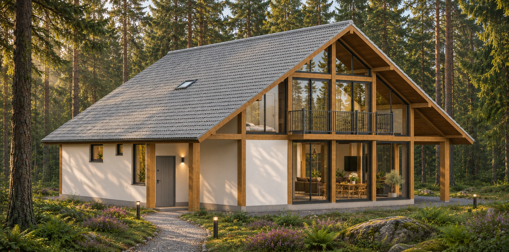
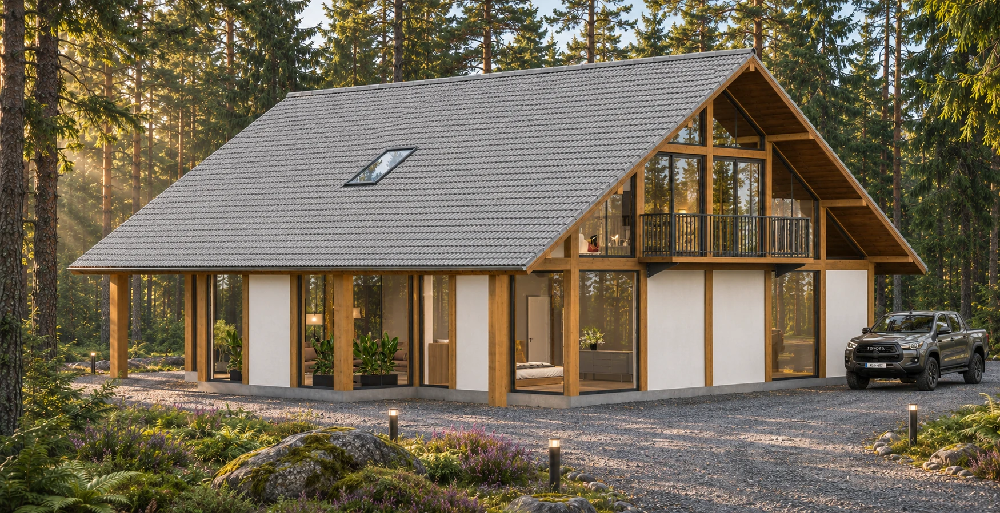

+ HUNTER HOUSE 26 CONCEPT VISUALISATION ELEVATION / 01 01 — THE ARCHITECTURE
Structure withnothing to hide. FACHWERK / EXPOSED TIMBER FRAME
A house defined by its frame.
Fachwerk is a building tradition in which timber posts and beams form the structural framework, with panels filling the spaces between them. The visible frame gives the architecture its distinctive rhythm.
Contemporary interpretations pair that clear structural language with generous glazing, modern insulated envelopes and open, connected spaces.
See the idea in three dimensions ↗ A CLEAR STRUCTURAL RHYTHM 01 — FRAME 02 — INFILL FORM FOLLOWS THE FRAME ILLUSTRATIVE DIAGRAM

A CLOSER CONNECTION TO OUTSIDE 02 — THE EXPERIENCE
More than a view.A way to live. The appeal is in the everyday: the changing light, the presence of natural materials, the moment a room opens towards the garden.
01 Light, given room Generous glazed openings bring the surroundings into view and let daylight shape the spaces.
02 A frame with character Visible posts and beams bring a calm, legible order to the house — and a material you can feel connected to.
03 Spaces that connect A post-and-beam approach can support open layouts, with room planning shaped around how you want to live.
03 — A CONSIDERED CHOICE
Beautiful by nature.Better through detail. A distinctive home deserves an informed decision. The frame creates possibilities; good design and specification turn them into everyday comfort.
THE ADVANTAGES + What draws you in Architectural character The exposed frame gives both the exterior and interior a recognisable identity.
Openness and flexibility Engineered frames can create generous spaces and opportunities for wide openings.
A considered building envelope Modern timber systems can accommodate high levels of insulation when the full envelope is designed well.
THE CONSIDERATIONS ↗ What needs attention Glass needs a strategy Orientation, shading and ventilation matter: large glazed areas can increase summer heat gain and winter heat loss.
Detailing protects the timber Moisture control, junctions and appropriate finishes are important. Exposed timber and glazing seals need planned care.
Quality has a cost Engineered connections, specialist glazing and skilled assembly can add cost. Compare complete specifications, not the frame alone.
Comfort, energy use and maintenance depend on the site, design and final specification. They are not guaranteed by the frame type alone.
HUNTER HOUSE 26 / INTERACTIVE EXPERIENCE
Find yourpoint of view. Move around the house. Discover its proportions.
Explore Hunter House 26 ↗ An interactive architectural model. Best explored at your own pace. OPEN THE 3D EXPERIENCE ↗